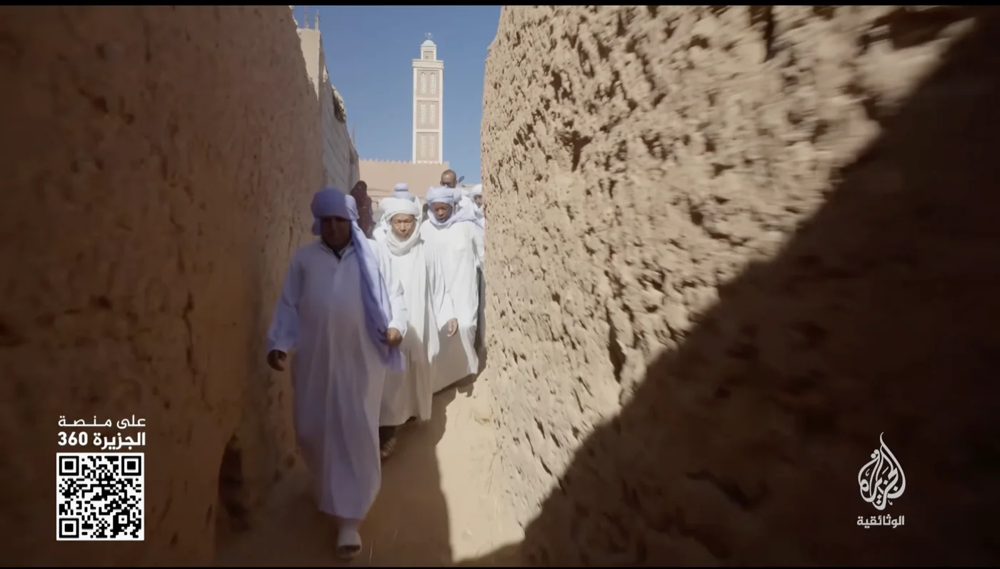
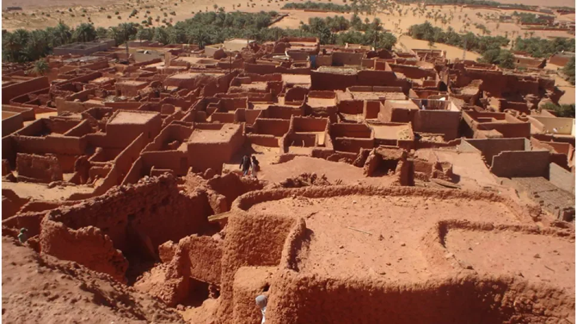
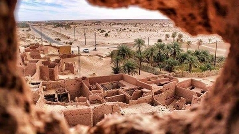

في الجنوب الجزائري، حيث تبدو الصحراء بلا نهاية، لم تكن قوافل الحج مجرد رحلات نحو مكة، بل كانت عالماً كاملاً يتحرّك فوق الرمال. وأثناء عملي على فيلم "الركب التواتي… حجاج الصحراء"، أدركت أنني لا أبحث فقط في تاريخ قافلة قديمة، بل في ذاكرة جماعية كاملة ما تزال حيّة داخل قصور توات ووجوه أهلها وحكاياتهم.
ركب يحمل ذاكرة القارة
كان الركب التواتي واحداً من أشهر أركاب الحج الصحراوية في تاريخ المغرب الإسلامي. من هنا، من واحات توات، كانت القوافل تتجمّع قبل أن تنطلق في رحلة طويلة وشاقة نحو الحجاز، رحلة تستمر أشهراً، يقطع خلالها الحجاج آلاف الكيلومترات فوق ظهور الجمال، عابرين الصحراء الليبية ثم الأراضي المصرية وصولاً إلى موانئ العبور نحو مكة.

من أرشيف الفيلم — قوافل الحج تعبر الصحراء الكبرى
أكثر من رحلة جغرافية
لكن ما شدّني خلال صناعة الفيلم، هو أن الركب لم يكن مجرد انتقال جغرافي من مكان إلى آخر. كان تجربة روحية وإنسانية كاملة.
في تلك القوافل، كان الإيمان يسير جنباً إلى جنب مع الحياة اليومية. حلقات ذكر تُقام ليلاً وسط الصحراء، مدائح نبوية تتردد بين الكثبان، علماء يتبادلون الكتب والإجازات، وأسواق صغيرة ترافق الركب لتبادل السلع القادمة من إفريقيا وبلاد المغرب.
الصحراء تحفظ الآثار
كلما تعمّقت في البحث، شعرت أن الصحراء نفسها كانت تحفظ آثار هؤلاء الحجاج. القصور القديمة، الزوايا، الطرق المهجورة، وحتى الحكايات الشفوية التي ما يزال الناس يروونها إلى اليوم… كلها كانت تحمل شيئاً من روح ذلك الركب.
"الصحراء لا تنسى. كل حجر فيها شاهد على من مرّ من هنا."
— من شهادات أهل توات

قصور توات — حاضنة الذاكرة وملتقى القوافل
ما وراء الكاميرا
أثناء التصوير، كنت مهتماً بالتفاصيل الصغيرة أكثر من الصور الكبرى. كيف كان الحاج يودّع أهله؟ كيف كانت الليالي الطويلة في الصحراء؟ كيف كان الخوف، والتعب، واليقين، يعيشون معاً داخل الرحلة نفسها؟
هذه الأسئلة هي التي قادت الفيلم بصرياً وإنسانياً.
ملتقى القوافل والشعوب
ومن أكثر الأمور التي أثّرت فيّ، فكرة أن الصحراء الجزائرية كانت يوماً ملتقى لقوافل وشعوب متعددة. فالركب التواتي كان يلتقي أحياناً بقوافل إفريقية أخرى، مثل الركب التكروري القادم من مناطق غرب إفريقيا، لتتحول الصحراء إلى مساحة عبور إنساني وثقافي وروحي هائلة.

طرق الركب القديمة — عبور القارة نحو الحجاز
الذاكرة لم تختفِ
اليوم، اختفت تلك القوافل مع وسائل النقل الحديثة، لكن أثرها لم يختفِ تماماً. ما تزال الذاكرة موجودة في توات، في القصص، وفي الطقوس، وفي ذلك الشعور العميق بأن الحج لم يكن مجرد وصول إلى مكة، بل رحلة تغيّر الإنسان من الداخل.
هذا الفيلم كان بالنسبة لي محاولة للإنصات إلى تلك الذاكرة… وإعادة السفر، ولو بصرياً، مع رجال حملوا معهم الإيمان والحكايات وروح الصحراء في طريقهم الطويل نحو الحجاز.
In the Algerian south, where the desert seems to stretch without end, the Hajj caravans were never merely journeys toward Mecca — they were entire worlds moving across the sands. While working on the film "The Touat Caravan… Pilgrims of the Desert," I realized I was not simply researching the history of an ancient caravan, but excavating a collective memory still alive within the ksour of Touat, in the faces of its people and their stories.
A Caravan That Carried a Continent's Memory
The Touat Caravan was one of the most renowned Hajj caravans in the history of the Islamic Maghreb. From here, from the oases of Touat, the caravans would gather before setting out on a long and arduous journey toward the Hijaz — a journey lasting months, during which the pilgrims covered thousands of kilometres on camelback, crossing the Libyan desert, then Egyptian lands, to reach the transit ports toward Mecca.
From the film archive — Hajj caravans crossing the Sahara
More Than a Geographical Journey
But what captivated me during the making of this film was the realization that the caravan was not merely a geographical transition from one place to another. It was a complete spiritual and human experience.
Within those caravans, faith walked side by side with daily life. Circles of dhikr performed at night in the heart of the desert, prophetic praises echoing between the dunes, scholars exchanging books and scholarly licenses, small markets accompanying the caravan to trade goods arriving from Africa and the Maghreb.
The Desert Preserves Its Traces
The deeper I went into research, the more I felt that the desert itself had preserved the traces of those pilgrims. The ancient ksour, the zawiyas, the abandoned roads, and even the oral stories that people still recount to this day — all carried something of the spirit of that caravan.
"The desert does not forget. Every stone in it bears witness to those who passed this way."
— From the testimonies of Touat's people
The ksour of Touat — cradle of memory and meeting point of caravans
Behind the Camera
During filming, I was drawn to small details more than grand images. How did a pilgrim bid farewell to his family? What were the long desert nights like? How did fear, exhaustion, and certainty coexist within the same journey?
These questions guided the film, both visually and humanly.
A Meeting Point of Caravans and Peoples
Among the things that moved me most was the idea that the Algerian desert was once a meeting point for multiple caravans and peoples. The Touat Caravan would sometimes encounter other African caravans, such as the Takruri caravan coming from West Africa, transforming the desert into a vast space of human, cultural, and spiritual passage.
Ancient caravan routes — crossing the continent toward the Hijaz
The Memory Did Not Disappear
Today, those caravans have vanished with modern means of transport, but their traces have not disappeared entirely. The memory still lives in Touat — in the stories, in the rituals, and in that deep feeling that the Hajj was not merely an arrival in Mecca, but a journey that transforms a person from within.
This film was, for me, an attempt to listen to that memory… and to travel once more, if only visually, with men who carried with them faith, stories, and the spirit of the desert on their long road toward the Hijaz.